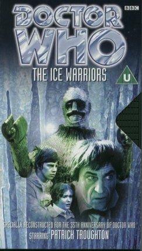
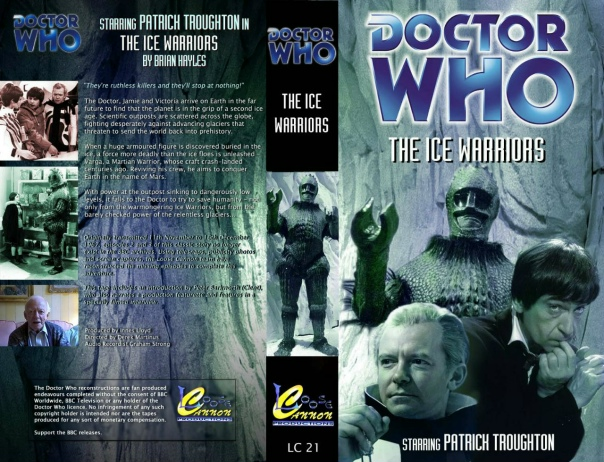
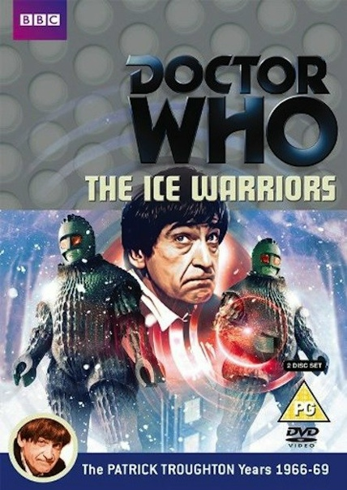
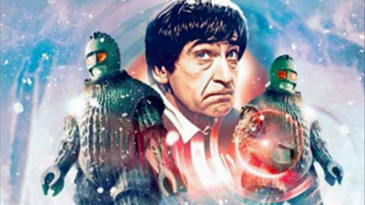
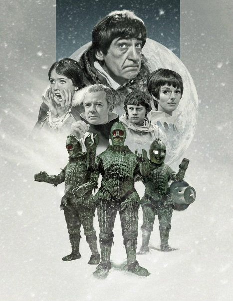

Эра Второго Доктора (5 сезон)
<<< НАЗАД ||| 3. Ледяные воины ||| ДАЛЬШЕ >>>
+ Реконструкция (эпизоды 2, 3) LCRecon Субтитры: Русские и Английские |  |
|---|---|
+ Укороченная омнибус реконструкция (эп. 2+3) VHS, 1998 * [fm646] для описаний событий в реконструкции Субтитры: отсутствуют | |
+ Черно-белая анимация (эпизоды 2, 3) Субтитры: Русские и Английские | |
эп.2: Отрывок- Доктор и Клент (Garrett Gilchrist)
11 ноября - 16 декабря 1967
6 эпизодов по 25 мин.
| Изначально все эпизоды утеряны * 1-й и с 4-го по 6-й эпизоды найдены в 1988 г. - 16mm t/r * На оставшиеся (2-3) эпизоды имеется анимация и реконструкция |
|---|
 |  |
Первое появление Ледяных воинов. Сюжет развивается на Земле в 51 веке посреди ледникового периода.
 VHS - ноябрь 1998 |  LC recon - ноябрь 2004 |  DVD - 26 августа 2013 * Версия в нашей группе |
|---|




